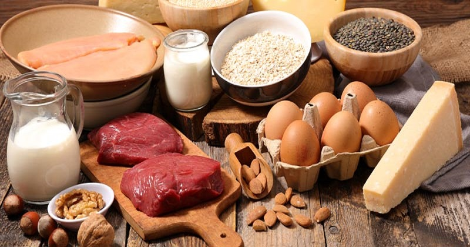

ΠΡΩΤΕΙΝΕΣ
Τι είναι οι Πρωτεΐνες
Οι Πρωτεΐνες αποτελούν δομικό συστατικό όλων των κυττάρων, αντισωμάτων,
ενζύμων και των περισσότερων ορμονών του οργανισμού μας.
Η δομική
μονάδα της πρωτεΐνης είναι το αμινοξύ.
-
Κολλαγόνο
Βρίσκεται στο δέρμα και έχει τη μεγαλύτερη αναλογία πρωτεΐνης στον ανθρώπινο οργανισμό.
-
Αιμοσφαιρίνη
Βασικό συστατικό των ερυθρών αιμοσφαιρίων και ο ρόλος της είναι να μεταφέρει το οξυγόνο σε όλους τους ιστούς.
-
Φεριτίνη
Υπεύθυνη για τη μεταφορά του σιδήρου
-
Κερατίνη
Πρωτεΐνη που βρίσκεται στα μαλλιά και είναι υπεύθυνη για το οξυγόνο τους
Οι Πρωτεΐνες βρίσκονται σε ζωικές τροφές ( όπως τα κρέατα και τα ψάρια) και στα
παράγωγά τους (όπως τα αυγά και τα γαλακτοκομικά)
και σε κάποιες φυτικές ( όπως τα μανιτάρια)
